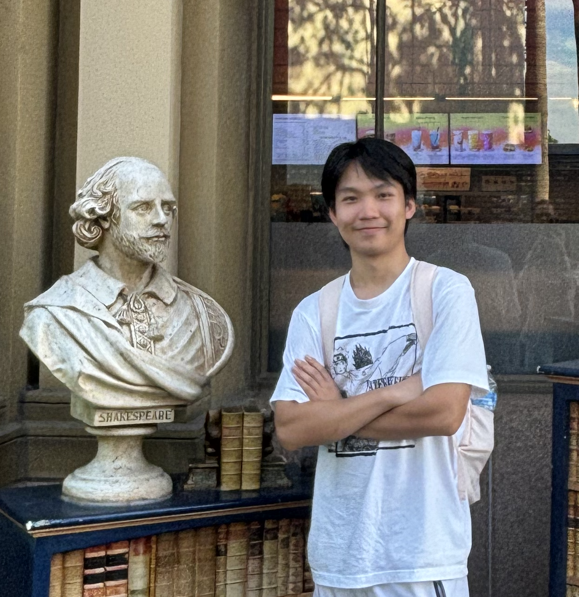

Biomedical & Electrical Engineer · Neural Interfaces · bioMEMS

I am an incoming MSE student at the Johns Hopkins University. I finished my undergraduate study at the University of Michigan, where I majored in Biomedical Engineering with a minor in Electrical Engineering. I am equipped with skills in various fields, including CAD with Solidworks, simulations with COMSOL, programming in Python, microcontroller programming with Arduino, statistical analysis with Python and MatLab, designing circuits, LabView and basic laboratory skills for polymer synthesis.